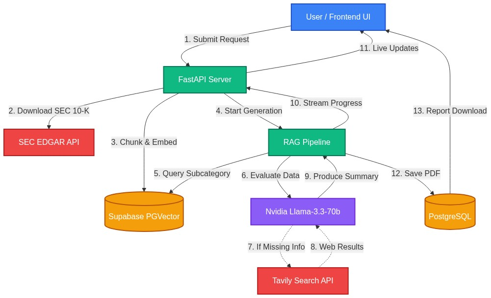

A SWOT analysis of a public company is mostly reading. The facts are in the annual 10-K filing, spread across a hundred-plus pages of risk factors, segment results and management commentary. An analyst's job is to find the few paragraphs that matter and turn them into strengths, weaknesses, opportunities and threats.
That's a retrieval problem, so I built Meridian: type in a ticker, and it pulls the latest 10-K, finds the relevant passages and writes a structured SWOT report you can download as a PDF. This post walks through how it works, and the one design decision that made the biggest difference: letting the model say "I don't have enough to answer this."
TODO: add a sentence on why you started this project — a problem at work, a class, curiosity? Readers connect with the "why" more than the stack.
The Pipeline at a Glance

- Fetch: download the company's latest 10-K from SEC EDGAR.
- Chunk and embed: split the filing into sections and embed each chunk with
NVIDIA's
nv-embedqa-e5-v5model. - Store: save the vectors in Postgres on Supabase, using the PGVector extension.
- Retrieve: for each SWOT category, pull the most useful chunks.
- Evaluate: ask Llama 3.3 70B (served through NVIDIA NIM) whether those chunks are actually enough to answer.
- Fall back: if they aren't, search the web with Tavily to fill the gap.
- Write: combine both sources into the final report, streamed to the browser as it's generated.
Retrieval: Relevant Isn't Enough
My first version used plain similarity search: embed the question, return the closest chunks. The problem showed up immediately with 10-Ks. Filings repeat themselves, so the top results for "competitive threats" were often several near-identical paragraphs about the same competitor. The model got five copies of one idea and nothing else.
The fix was Maximal Marginal Relevance (MMR). MMR fetches a larger pool of candidates, then picks chunks one at a time, rewarding relevance to the query but penalising similarity to chunks it has already chosen. You get results that are still on topic but cover more ground.
In LangChain it's a one-line change on the retriever:
retriever = vector_store.as_retriever(
search_type="mmr",
search_kwargs={
"k": 8, # chunks returned to the model
"fetch_k": 30, # candidates considered before diversifying
"lambda_mult": 0.6, # 1.0 = pure relevance, 0.0 = pure diversity
},
)TODO: check these values against your code and replace them with the
real ones. If you tuned lambda_mult, say what you tried and what you noticed.
The Sufficiency Check
A 10-K is written by the company about itself. It's great for strengths and weaknesses, but thin on opportunities and threats that depend on what's happening outside the company: a new competitor, a regulation, a shift in the market after the filing date.
A standard RAG pipeline doesn't notice this. It retrieves whatever is closest and hands it to the model, which then writes something confident from weak evidence. That's where hallucinations come from.
So before writing anything, Meridian asks the model a narrow question: given this context, can you answer this category well? Reply YES or NO. Only on a NO does it search the web.
verdict = llm.invoke(
SUFFICIENCY_PROMPT.format(category=category, context=context)
).content.strip().upper()
if verdict.startswith("NO"):
results = tavily.search(query=f"{company} {category}", max_results=5)
context += format_web_results(results)Three things made this work better than I expected:
- The decision is binary. Asking for YES or NO, instead of a confidence score, gives a branch the code can follow reliably.
- It runs per category. Strengths almost never need the web; threats often do. Checking each one separately keeps search calls to where they help.
- The filing stays the primary source. Web results are added to the SEC context, not swapped in for it, so the report stays grounded in the filing.
The most useful thing an LLM can tell you is when it doesn't know enough to answer.
TODO: add a concrete example here — a company where the filing alone gave a weak "Threats" section and the web fallback fixed it. A before/after snippet would be ideal.
Streaming the Wait
Fetching a filing, embedding it and running several model calls takes time. A spinner that sits there for a minute feels broken. Meridian uses Server-Sent Events from FastAPI, so the interface shows each stage as it happens ("Fetching 10-K…", "Evaluating Threats…", "Searching the web…") and the report text appears as it's written.
SSE was a better fit than WebSockets here: data only flows one way, from server to browser, and it works over plain HTTP with no extra setup.
What I'd Do Next
- Cite sources in the report, so every claim links to its 10-K section or web page.
- Compare filings year over year: a risk that's new this year is more interesting than one that's been there for a decade.
- Evaluate properly, with a small set of companies and reference SWOTs to score changes against, instead of reading outputs by eye.
TODO: add your real lessons learned — what broke, what surprised you, what took longer than expected.
Meridian is open source. You can try the live app or read the code on GitHub.